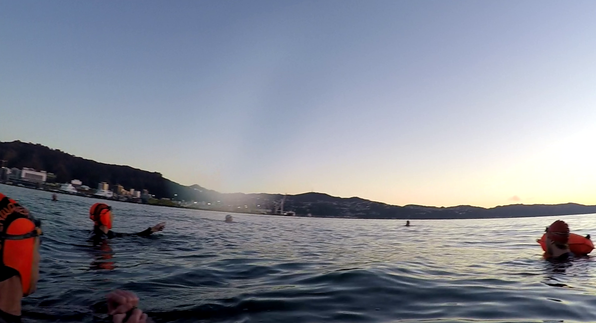
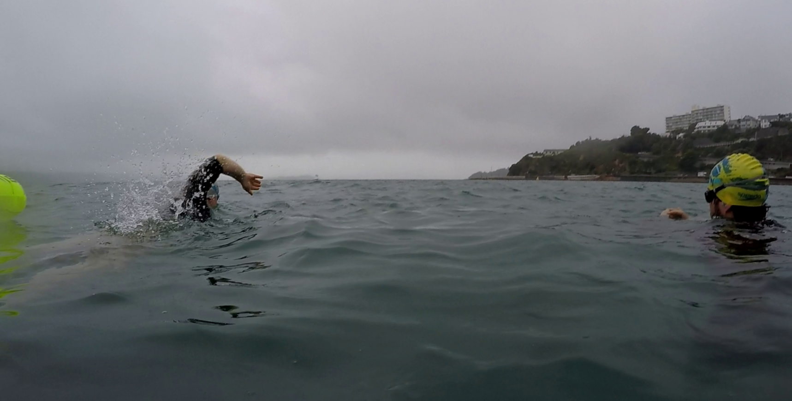
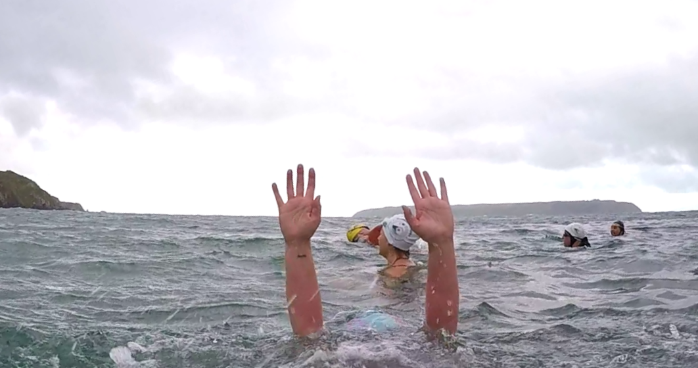

Welcome to the Lost Buoys
We are a group of Kiwi ocean swimmers in Wellington, who haven't slept in on a Saturday morning in years.
Instead we meet for a 7:30am swim in our beautiful harbour, followed by breakfast, coffee, and a catchup of the week.
Live outside of Wellington? You can still be a Lost Buoy!
Register here


Interested in starting ocean swimming? Here’s some tips so you don’t “fall off the deep end” …
- Develop your swimming technique and strength in the pool and aim to be able to swim at least 200 meters nonstop. Being aware of your swimming ability will give you confidence while in the sea.
- Find a local swimming group (there might even be a Lost Buoys) and begin your ocean swimming journey, while making new friends. My experience is that these groups are filled with wonderful people.
- Ocean swimming is all year round, but start in the summer!
Also here is some gear worth considering
- A brightly coloured swimming cap gives you visibility and keeps your head warm (and you’ll look like an Olympian). You can double them up in winter, or buy a warmer cap made of neoprene (wetsuit material).
- Goggles. If you’re short sighted like I am, you can buy goggles with perscription lenses. Also available are goggles that are tinted and glare resistant. If you dip your goggles in the water before you put them on, this usually prevents fogging, but sometimes giving them a lick on the inside can help too.
- Wetsuit. It gives you extra warmth, buoyancy and it compliments your figure. But be sure that it fits you properly. Mine was too tight in the upper body and I’d finish a swim with sore shoulders which eventually lead to injury.
- Tow floats are brightly coloured and improve your visibility to boats. They attach around your waist by a cord, which unfortunately will get tangled around your arms on windy days. Despite advertising, tow floats tend to leak, so its best not to risk keeping electronics inside them.
- Some fitness watches like my Garmin Forerunner 935 are waterproof and can record open water swimming. When you’re setting up your watch, set it to “every second recording” (search that term on Google with your specific watch type). This setting helps the satellite track you as the watch will lose the signal as it passes underwater.
- Togs. There are many ocean swimming challenges to overcome in your journey. To name a few; swimming in chop, waves, rain, darkness, alone, through plumes of Jellyfish and over Stringrays. Cramp! You’re just casually swimming along and suddenly your calf muscle locks up with intense pain! There’s nothing you can do except “just keep swimming” and the pain goes away … eventually. But yes, togs! Togs are the ultimate goal of open water swimmers. When you shed your wetsuit, removing your layer of buoyancy and warmth, to swim only in togs, you embrace the ocean and finally discover sea swimming.
